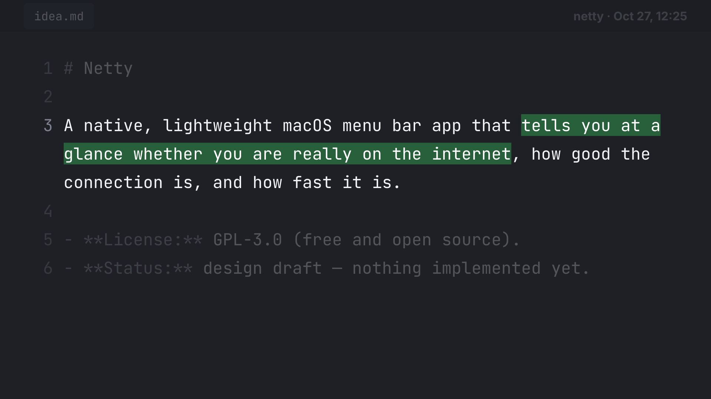
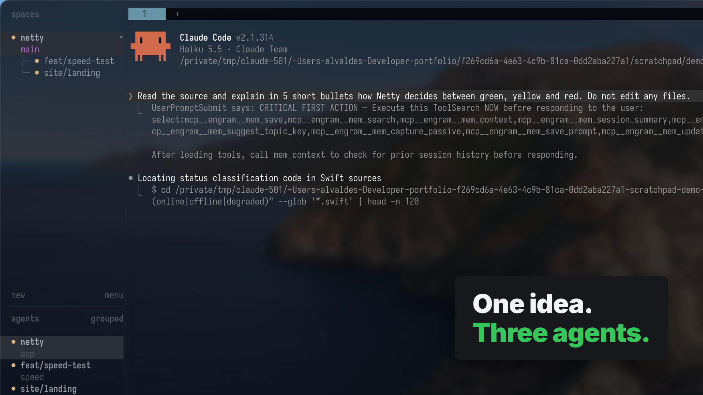
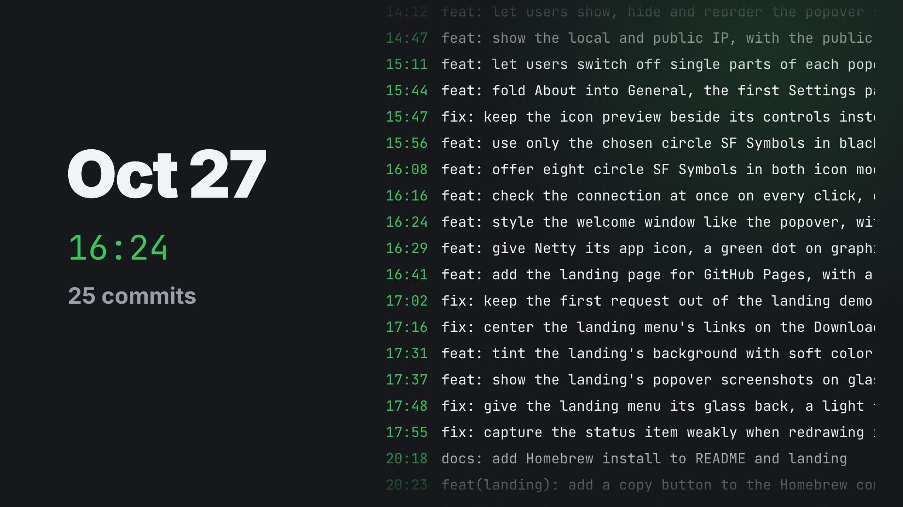
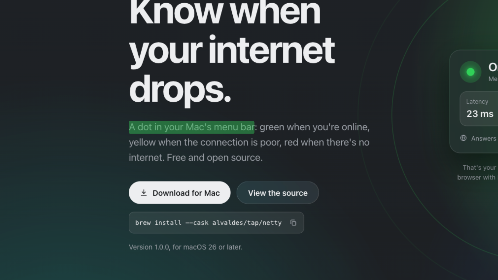
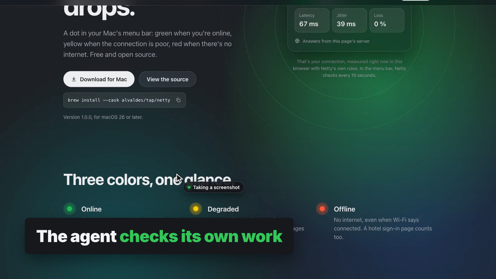
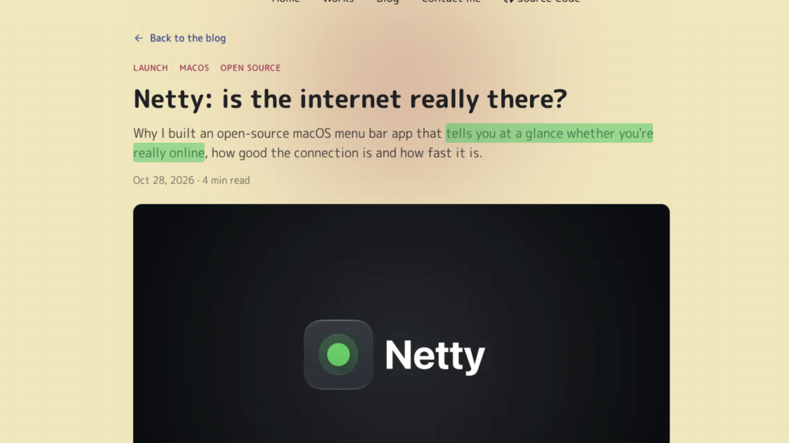
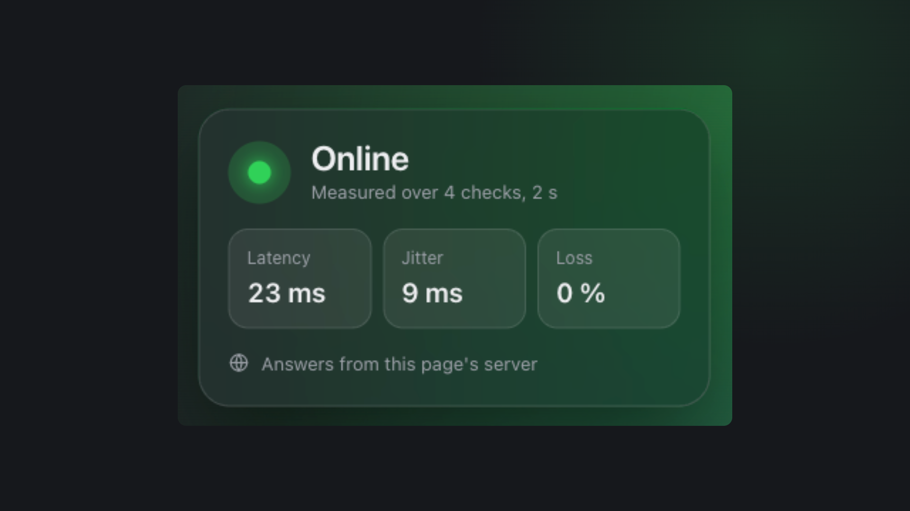
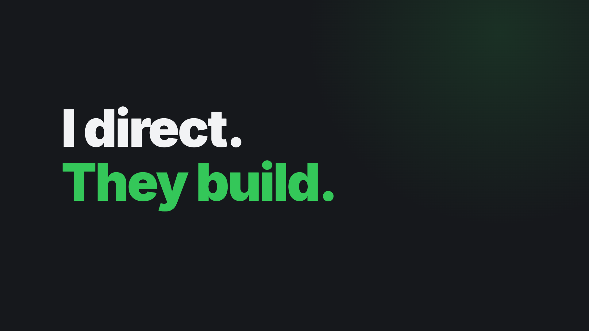
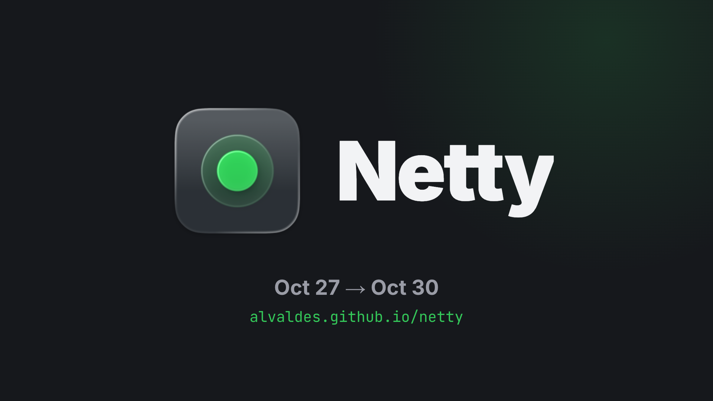

Storyline B: one sentence from idea.md travels all the way to the launch. 41 s, 1920×1080, every screen is real. No music yet; it goes in after this board is approved.

The real idea.md. A green bar wipes under "tells you at a glance whether you are really on the internet".

The sentence flies into herdr and splits into three dots. The real recording plays at 2.5×, ending on the agent that needs you.

The 38 real commits stream by; the clock runs 12:25 → 22:58 and the counter climbs to 38.

Push into the landing; the lede "A dot in your Mac's menu bar" gets the same green bar.

The real ego-browser recording: hover, screenshot, scroll, FAQ.

The launch post says the same sentence, and it gets highlighted again.

The post shrinks away; Netty's real "Online" popover rises and its green dot pulses once.

"I direct." then "They build."

The Netty icon lands, the wordmark wipes in, then the dates and the URL hold.